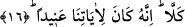
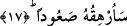

“istinkâr/hoş görmeme” ifâde etmektedir. Bu istib’ad iki sebebe dayanmaktadır. Ya
kendisine verilenler çoktur ve son noktaya ulaşmıştır artık, daha arttırılması mümkün
değildir. Bir başka ifâdeyle; kendisine verilen oğullar ve nimetler normal olarak onun
gibilere verilenin en son noktasıdır. Ya da ikinci bir ihtimal olarak daha fazlasını
umması nimete ve nimeti verene karşı nankörlük ile çelişmektedir. Çünkü nimetle nimeti
verene nankörlük etmek bu günden itibâren artık bir arada bulunmayacaktır. Bir başka
ifâdeyle küfür ile daha fazla nimet verme ve nimetlenme artık bu günden itibâren bir
arada bulunmayacaktır.
16. Asla (ummasın)! Çünkü o, bizim âyetlerimize karşı alabildiğine inatçıdır.
“Asla” bu ifâde onun boş arzusu ve hırsını red, nâfile ve asılsız olan ümidini kesmeyi
ifâde etmektedir. Dolayısıyla bu ifâde mânâ bakımından daha öncesine bağlı olup “O,
nimetleri daha da artıracağını umuyor öyle mi, asla. Çünkü o bizim âyetlerimize karşı
son derece inatçıdır.” İnatçılık herhangi bir şeye muhâlefet ederek karşı çıkmaktır. “O
son derece inatçıdır” ifâdesi daha önce geçen kısmın sebebini bildirmektedir. Çünkü
nimeti veren yaratıcının âyetlerine karşı inatçılık etmek -ki bu âyetler apaçık Kur’an
âyetleridir- ve bunca mükemmel ve tam nimetlere karşı nankörlük etmek bütün
bunlardan tam olarak mahrum kalmaya sebebtir. Verilen ise istidrâc kabilinden
şeylerdir. Âyette “li âyâtinâ” ifâdesinin mânâ bakımından bağlı olduğu “ânîden/inatçı”
kelimesinden önce zikredilmesi tahsis ifâde etmektedir. Onun diğer hususlarda inadını
bırakıp da yalnız Allah’ın âyetlerine karşı inatçılık göstermesi elden kaçırılan şeyin ne
kadar büyük bir kayıp olduğunu göstermektedir.
Rivâyete göre Velid b. Muğiyre bu âyet indikten sonra fakirleşmeye devam etmiş ve
sonunda fakir olarak ölmüştür.
Büyüklerin nasîhatına kulak vermeyen kimse
Pişmanlık parmağının başını çok ısırır.
17. Ben onu sarp bir yokuşa sardıracağım!
Râğıb İsfahânî; âyette yer alan “se urhikuhu” fiilinin yapısı hakkında bilgi verir.
“Rehikahû el emru” demek herhangi bir iş bir kimseyi kapladı, kuşattı, baskı altına aldı
demektir. Aynı kökten olmak üzere “erhaktus salate” ifâdesi kullanılır. Bunun anlamı
namazı geciktirdim, tâ ki diğer namazın vakti geldi demektir. Şu hâlde kelimenin